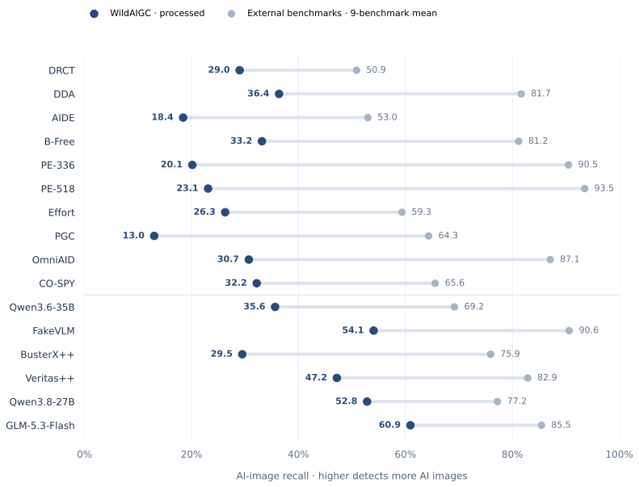
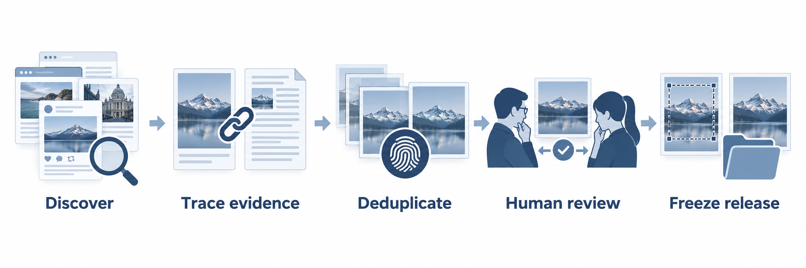

AI imagery in real-world claims.
News events, public figures and everyday scenes. Curated for an ordinary photographic appearance, with overtly stylized AI artwork excluded.
Real-world AI images.
A harder test for your detector.
Photographic-looking AI images from real news events and online claims, collected as they circulated on the web. A challenge set for testing whether detection performance holds up beyond familiar benchmarks.
Human-annotated, with source evidence supporting every AI label.
Dataset publicly available · Technical report in preparation
News events, public figures and everyday scenes. Curated for an ordinary photographic appearance, with overtly stylized AI artwork excluded.
Acquired from online reports and social-media contexts, preserving the files encountered on the web. No synthetic compression pipeline is used to create the challenge.
All 10 evaluated configurations show lower recall here than their nine-benchmark external mean. 30 images are missed by every one of them.
Explore the results ↗Processed examples from the collection. Detectors receive images alone; source links support human verification.
Both versions are available in the large-image viewer. Five of these examples are unchanged originals; raw and processed are identical. The retail poster has a manually cropped processed version. Labels reflect human release decisions; source evidence and its limitations remain documented.
Original collected bytes, including any existing comments, platform interfaces, identifiers, captions or generation marks. An acquired online file is not necessarily the generator’s earliest output.
Human-selected rectangular crops focus on the target image and remove surrounding comments, generation watermarks, platform identifiers or other cues where cropping permits. No inpainting, enhancement or resizing.
Among the 10 evaluated configurations, the highest processed recall is 54.05%. 30 images are missed by all ten.
Results reflect each model’s evaluated configuration and decision rule. Higher recall alone does not imply better overall detection performance; see the external real-image FPR results.

| Method | Raw Recall | Processed Recall |
|---|---|---|
| Classification models | ||
| DRCT | 0.2948 | 0.2899 |
| DDA | 0.3538 | 0.3636 |
| AIDE | 0.1450 | 0.1843 |
| B-Free | 0.3366 | 0.3317 |
| PE-336 | 0.1941 | 0.2015 |
| PE-518 | 0.2236 | 0.2310 |
| Multimodal large language models | ||
| Qwen3.6-35B | 0.3808 | 0.3563 |
| FakeVLM | 0.5283 | 0.5405 |
| BusterX++ | 0.2973 | 0.2948 |
| Veritas++ | 0.4644 | 0.4717 |
Recall is the fraction of AI images detected; unknowns count as misses. This positive-only set does not measure real-image false positives.
Our PE baselines: PE-Core-Large (Perception Encoder) + classification head, trained by our team at 336 × 336 and 518 × 518 input resolution. Details will appear in the technical report.
| Method | Standard benchmarks | In-the-Wild benchmarks | WildAIGC In-the-Wild · ours | Common-set mean 9 benchmarks ↑ | |||||||
|---|---|---|---|---|---|---|---|---|---|---|---|
| EvalGen | synthbuster | UnivFD | AIGIBench | Chameleon | SynthWildx | WildRF | RRDataset | ITW-SM | WildAIGC processed | ||
| Classification models | |||||||||||
| DRCT | 0.5093 | 0.5593 | 0.2196 | 0.5650 | 0.5818 | 0.5975 | 0.5838 | 0.3627 | 0.5982 | 0.2899 | 0.5086 |
| DDA | 0.9685 | 0.9757 | 0.8359 | 0.7445 | 0.7078 | 0.9291 | 0.8724 | 0.4700 | 0.8454 | 0.3636 | 0.8166 |
| AIDE | 0.5626 | 0.6527 | 0.8101 | 0.7090 | 0.3398 | 0.4874 | 0.5514 | 0.2238 | 0.4308 | 0.1843 | 0.5297 |
| B-Free | 0.9128 | 0.9423 | 0.8266 | 0.7189 | 0.6201 | 0.9852 | 0.9319 | 0.4786 | 0.8886 | 0.3317 | 0.8117 |
| PE-336 | 0.9996 | 0.9653 | 0.9945 | 0.9700 | 0.7606 | 0.9062 | 0.9654 | 0.7797 | 0.8028 | 0.2015 | 0.9049 |
| PE-518 | 0.9997 | 0.9973 | 0.9942 | 0.9609 | 0.8216 | 0.9468 | 0.9881 | 0.8229 | 0.8840 | 0.2310 | 0.9351 |
| Multimodal large language models | |||||||||||
| Qwen3.6-35B † | 0.8775 | 0.5157 | 0.5330 | 0.4605 | 0.5769 | 0.8656 | 0.9157 | 0.5510 | 0.9306 | 0.3563 | 0.6918 |
| FakeVLM † | 0.9900 | 0.9587 | 0.9270 | 0.9409 | 0.9953 | 0.9490 | 0.9276 | 0.5870 | 0.8810 | 0.5405 | 0.9063 |
| BusterX++ † | 0.9290 | 0.8103 | 0.5370 | 0.5465 | 0.6142 | 0.9313 | 0.9589 | 0.5640 | 0.9422 | 0.2948 | 0.7593 |
| Veritas++ † | 0.9890 | 0.8300 | 0.4430 | 0.6977 | 0.9324 | 0.9321 | 0.9741 | 0.7050 | 0.9540 | 0.4717 | 0.8286 |
Common-set mean: EvalGen, synthbuster, UnivFD, AIGIBench, Chameleon, SynthWildx, WildRF, RRDataset and ITW-SM, equally weighted. † Fixed subsets on large dimensions; full evaluation on smaller dimensions. Blank cells indicate unavailable results.
Evaluation protocol ↗ · Additional results and crop analysis ↗
Each image is manually reviewed against its source context and AI evidence. Only confirmed cases are retained; general-purpose detector outputs are not used for selection.

407 images from recorded news and fact-check sources. A curated challenge set, not a representative sample of the entire internet.


Data, documentation and the forthcoming technical report.
407 images with raw / processed versions, labels and source references.
Hugging Face ↗Publicly availableFull methodology, detector settings and analysis.
In preparationUsage instructions, evaluation protocol and additional results.
Explore the repository ↗Until the report is published, cite WildAIGC-Bench v1.0 and the exact dataset revision. Third-party image rights remain with their respective holders; see the dataset LICENSE. Corrections can be raised through repository issues.